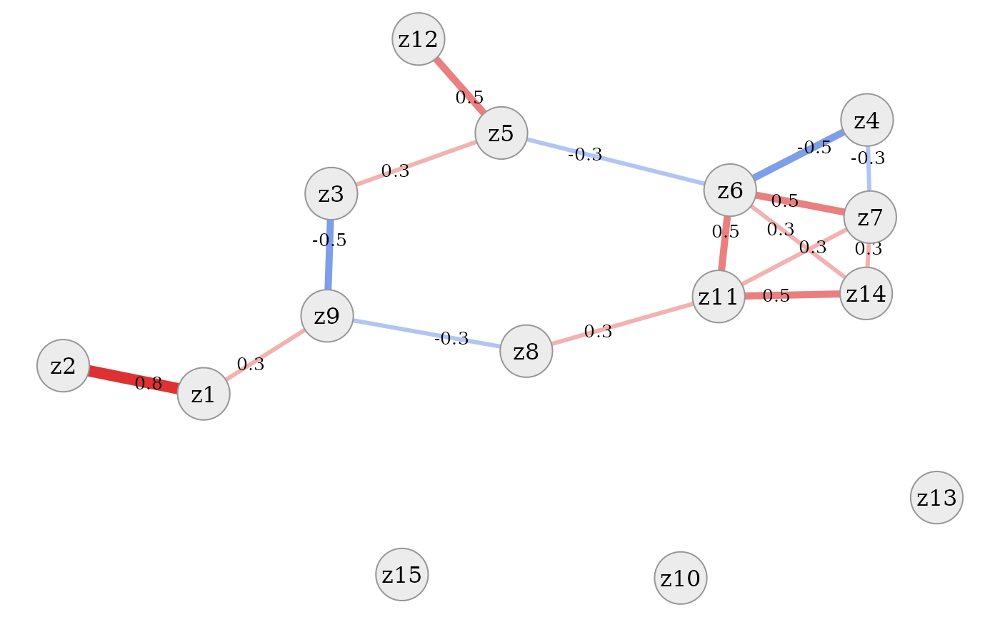
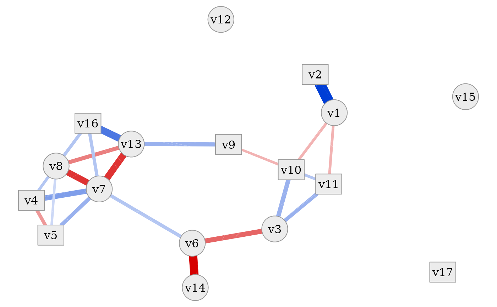
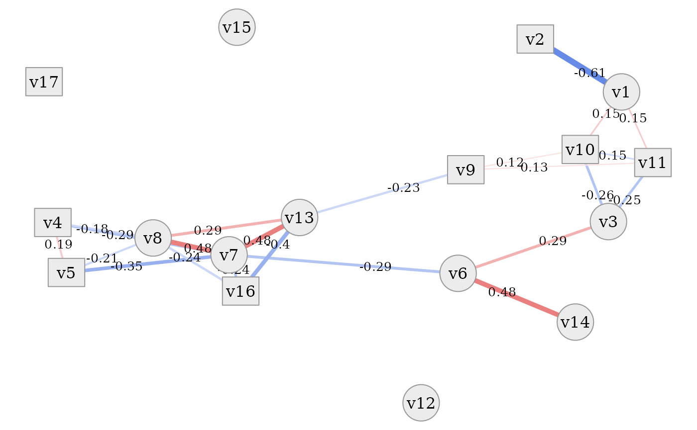
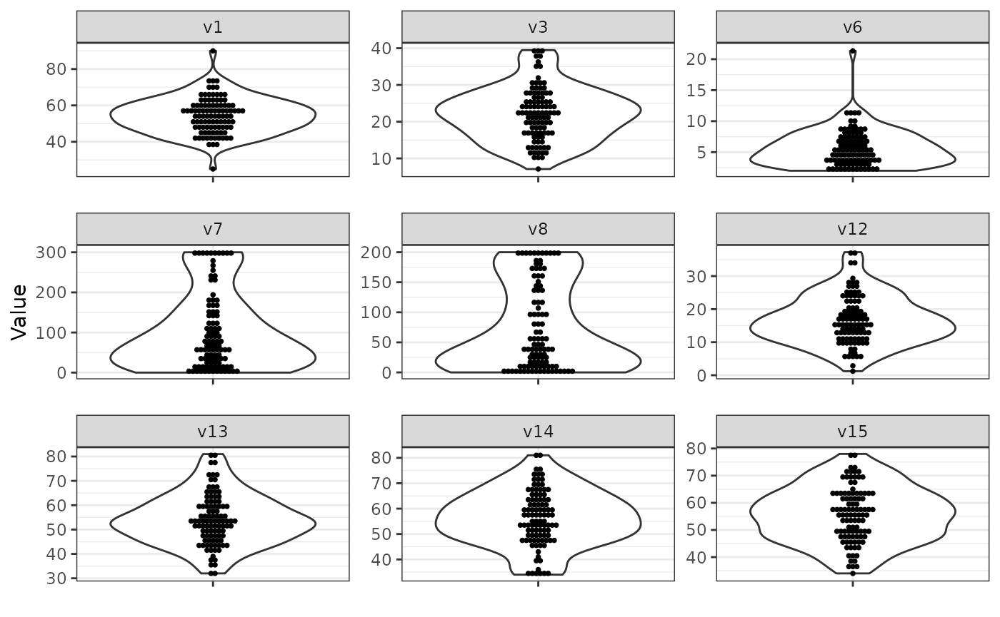
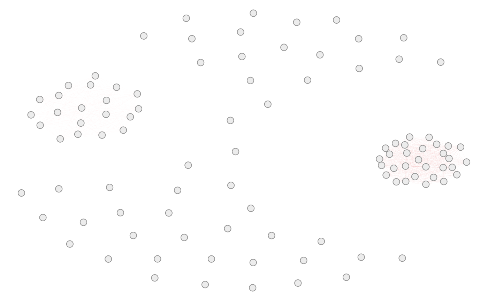

simdata: A package for creating simulated datasets
Michael Kammer
2023-08-30
Source:vignettes/Demo.Rmd
Demo.RmdIntroduction
Simulation studies in statistics or other methodological research fields are controlled experiments used to assess the properties of algorithms, gauge the performance of statistical or machine learning models, and gain insights into complex phenomena which are not readily understood analytically. While simulation studies by nature are simplifying the “true” underlying mechanisms of interest, they are useful because they allow the complete specification of the “ground truth” to which comparisons can be made and the experimental conditions are fully under control of the experimenter. This is in contrast to data obtained from observational studies, in which many factors may influence the resulting measurements.
Simulation studies typically consist of three major components:
- A data generating mechanism
- The methods or models to be evaluated
- Evaluation criteria to assess the methods after application to the generated data
All three together make up what we will call the simulation study design.
The data generating mechanism usually simulates (i.e. creates) data according to pre-defined parameters, e.g. the number of variables (i.e. columns of the data matrix) to be generated, their correlation structure or the number of observations (i.e. rows of the data matrix). Usually, the data generation involves some uncertainty or noise when creating the data, to mimic the uncertainty when data is obtained through measurements in the real world or sampled from a population. Therefore, each simulation scenario can be conducted repeatedly to remove the effect of sampling variability.
The methods or models to be evaluated in the study are then applied to the datasets generated by the data generating mechanism and the evaluation criteria are computed, e.g. some measure of deviation from the ground truth.
Data generation with this package
The goal of the simdata package is to provide a simple
yet flexible framework which supports the first step of a simulation
study, namely the data generating mechanism.
The way data is created in this package involves the following procedure:
- Draw an initial dataset
Zfrom some probability distribution. An example might be to draw a number of variables with given correlation structure from a multivariate Normal distribution. - The initial data is then transformed via user specified
transformation functions into the final dataset
X. Examples for transformations could be to derive binary variables from Normal random variables or to change location and scale of the initial random variables. - The final dataset is optionally post-processed. Examples are to truncate the dataset to prevent problematic outliers or to standardize the data.
After these steps, the final dataset X can be used in
the further steps of the simulation study.
Workflow with this package
In order to implement the outlined data generating mechanism, the
user first has to define a simulation design. This is done by extending
the S3 class simdesign, or using one of the pre-defined
simulation designs, which is used to as an interface for further package
functions. It stores all necessary information to generate data
following the given specification. The actual data generation then
happens in the simulate_data function. Please see the
numerous examples below to quickly familiarize yourself with the package
functionality.
Packages used
This vignette makes use of the tidyverse environment
of packages and specifically requires the dplyr,
purrr, ggplot2, forcats and
GGally packages to be available, as well as the
reshape2 package for data transformation. Furthermore, for
the parallelization example the
doParallel and doRNG package are loaded.
Please refer to the R environment used to create
this vignette for detailed information. In this vignette we will
prefix all relevant function calls by :: to show the
package which implements the function - this is not necessary but only
done for demonstration purposes.
Example 1: Independent data, no transformation
We demonstrate a very basic example here:
- Setup a design to sample from 5 independent normal variables
- Define a diagonal 5 x 5 correlation matrix
(
correlation_matrix) - Ensure that the data is returned as a data.frame by passing the
data.frameconstructor totransform_initial. (Otherwise the data would be returned as a matrix.) - Pass a prefix to the function to construct variable names
- Define a diagonal 5 x 5 correlation matrix
(
- Simulate from the design to obtain 100 observations
(
n_obs) with a given random seed (seed). - Inspect the simulated data.
correlation_matrix = diag(1, nrow = 5)
sim_design = simdata::simdesign_mvtnorm(relations = correlation_matrix,
transform_initial = data.frame,
prefix_final = "variable")
sim_data = simdata::simulate_data(sim_design, n_obs = 100, seed = 25897165)
knitr::kable(head(sim_data))| variable1 | variable2 | variable3 | variable4 | variable5 |
|---|---|---|---|---|
| -0.4083281 | 1.3494810 | 0.6183227 | -0.5885417 | 0.9910670 |
| -1.3882168 | -1.3453283 | -0.8755803 | -0.2168642 | -2.3119306 |
| -0.9298047 | -0.2462345 | 0.1028683 | -0.5223406 | -0.4701425 |
| 1.3110934 | -1.0087735 | -0.6052583 | 2.0218711 | 0.8146569 |
| -1.2179351 | -0.8560356 | -2.6381571 | -0.0863500 | 0.3438921 |
| 0.3504726 | -0.1930905 | -1.0631527 | -1.0101591 | 0.6001550 |
Example 2: Independent data, with transformation
In this example we transform the initial data to obtain a more interesting dataset. The basic principle follows Example 1.
- Create a transformation function
transformationusingsimdata::function_list- Pass functions that transform the columns of the simulated, initial dataset as named arguments
- The number of columns in the final dataset is given by the number of transformations passed here
- To let the names of the arguments determine the final columnnames,
set
prefix_finalto NULL in thesimdesignconstructor
- Pass the created transformation function as
transform_initialargument to thesimdesignconstructor.
correlation_matrix = diag(1, nrow = 5)
transformation = simdata::function_list(
"v1" = function(x) x[, 1],
"v2*2" = function(x) x[, 2] * 2,
"v3^2" = function(x) x[, 3]^2,
"v4+v5" = function(x) x[, 4] + x[, 5],
check.names = FALSE # pass columnnames exactly as specified here
)
sim_design = simdata::simdesign_mvtnorm(
relations = correlation_matrix,
transform_initial = transformation,
prefix_final = NULL
)
sim_data = simdata::simulate_data(sim_design, n_obs = 100, seed = 25897165)
knitr::kable(head(sim_data))| v1 | v2*2 | v3^2 | v4+v5 |
|---|---|---|---|
| -0.4083281 | 2.6989619 | 0.3823229 | 0.4025253 |
| -1.3882168 | -2.6906566 | 0.7666409 | -2.5287948 |
| -0.9298047 | -0.4924690 | 0.0105819 | -0.9924831 |
| 1.3110934 | -2.0175470 | 0.3663376 | 2.8365280 |
| -1.2179351 | -1.7120713 | 6.9598728 | 0.2575421 |
| 0.3504726 | -0.3861811 | 1.1302936 | -0.4100041 |
Example 3: Realistic, complex data
In this example we implement a design following Binder, Sauerbrei, and Royston (2011). The simulated data resembles data obtained from a biomedical study with a complex correlation pattern and different variable distributions.
- Create a complex initial correlation matrix comfortably using
simdata::cor_from_upper- This defines the initial distribution as a multivariate Normal
distribution
Zwith 15 dimensions
- This defines the initial distribution as a multivariate Normal
distribution
- Use a variety of transformations to create numeric, binary and
ordinal variables
- Using the transformation the initial distribution
Zis transformed to the final datasetXwith 17 columns
- Using the transformation the initial distribution
correlation_matrix = simdata::cor_from_upper(
15,
rbind(c(1,2,0.8), c(1,9,0.3),
c(3,5,0.3), c(3,9,-0.5),
c(4,6,-0.5), c(4,7,-0.3),
c(5,6,-0.3), c(5,12,0.5),
c(6,7,0.5), c(6,11,0.5), c(6,14,0.3),
c(7,11,0.3), c(7,14,0.3),
c(8,9,-0.3), c(8,11,0.3),
c(11,14,0.5)))
transformation = simdata::function_list(
v1 = function(z) floor(10 * z[,1] + 55),
v2 = function(z) z[,2] < 0.6,
v3 = function(z) exp(0.4 * z[,3] + 3),
v4 = function(z) z[,4] >= -1.2,
v5 = function(z) z[,4] >= 0.75,
v6 = function(z) exp(0.5 * z[,5] + 1.5),
v7 = function(z) floor(pmax(0, 100 * exp(z[,6]) - 20)),
v8 = function(z) floor(pmax(0, 80 * exp(z[,7]) - 20)),
v9 = function(z) z[,8] < -0.35,
v10 = function(z) (z[,9] >= 0.5) & (z[,9] < 1.5),
v11 = function(z) z[,9] >= 1.5,
v12 = function(z) 0.01*floor(100 * (z[,10] + 4)^2),
v13 = function(z) floor(10 * z[,11] + 55),
v14 = function(z) floor(10 * z[,12] + 55),
v15 = function(z) floor(10 * z[,13] + 55),
v16 = function(z) z[,14] < 0,
v17 = function(z) z[,15] < 0
)
sim_design = simdata::simdesign_mvtnorm(
relations = correlation_matrix,
transform_initial = transformation,
prefix_final = NULL
)Visualisation of initial correlation matrix
We can display the correlation matrix of the initial underlying
distribution using ggplot2. Or we can use the graph
plotting tools from this package to display a basic correlation
network.
Or we can use the simple graph visualisation provided by this
package. To keep this graph simple, correlations below a certain
threshold are removed. The simdata::plot_cor_network
function provides several options to improve display of the graph, some
of which are explained in more detail below.
Here we just point out that the layout of the network is based on the
Fruchterman-Reingold algorithm as implemented in the igraph
package and therefore comprises random parts. Therefore, using a seed
for the random number generation is advised.
simdata::plot_cor_network(sim_design, seed = 1)
Simulation and visualisation of final data
We simulate from the design and visualise numeric variables via
violinplots and discrete variables via barplots using
ggplot2.
sim_data = simdata::simulate_data(sim_design, n_obs = 100, seed = 25897165)We can also plot the correlation structure of the single, final
dataset via the correlation matrix and visualise it using
ggplot2 or as a network using the functions provided by
this package.
Visualisation of estimated correlation network
Note that the above correlation matrix is based on a single simulated
dataset of a fixed size. To provide a robust and stable estimate of the
correlation after transforming the initial dataset, one can employ
approximation by simulation, as the initial correlation structure is
affected by the data transformation and can not be analytically
expressed in all cases. This can conveniently be achieved using
estimate_final_correlation. The resulting correlation
network can be visualized via plot_cor_network or by
plot_estimated_cor_network which combines the estimation of
the correlation matrix and the network plotting into one wrapper
function.
Note that the layout algorithm of igraph computes a
similar layout for initial and final correlation structure, given some
manual tweaking of the random seed. This probably does not hold for all
setups, but if the initial and final layout are somewhat similar
(i.e. after proper pruning via cutting of low correlations), the
resulting graphs may reflect that.
We demonstrate some basic plotting functionality (the arguments are
identical for plot_cor_network):
- Draw all edges in the graph by setting
cor_cutoffto NULL - Turn off edge labeling by setting
edge_label_functionto NULL - Controling edge width using
edge_width_function - Using edge weights (i.e. correlation between two variables) to
influence the graph layout via
use_edge_weights- higher edge weight brings vertices closer together
# draw full network
simdata::plot_estimated_cor_network(sim_design,
cor_cutoff = NULL,
edge_label_function = NULL,
edge_width_function = function(x) x*25,
use_edge_weights = TRUE,
edge.color = "clipped-ramp",
seed = 2321673)
The following graphs all use the default correlation cutoff of 0.1.
- Switching correlation type to Spearman using
cor_type- Note that when edge weights are used, then the networks for different correlation types can not be compared directly, as the vertex layout may change
- Setting various other parameters
- Note the usage of
marto set the image margins to make the axes visisble - Note that distinction between categorical and numeric data is turned
off (
show_categorical)
- Note the usage of
# simplify by using cor_cutoff
simdata::plot_estimated_cor_network(sim_design,
seed = 2)
# set correlation type
simdata::plot_estimated_cor_network(sim_design,
cor_type = "spearman",
seed = 2321673)
# set various parameters
simdata::plot_estimated_cor_network(sim_design, seed = 2321673,
edge.color = "red-blue",
axes = TRUE, cor_type = "s",
edge_width_function = function(x) var(x)*200,
show_categorical = FALSE,
mar = c(2, 2, 0, 0))
In all of these plots it is evident that the dataset contains a tight
cluster of highly correlated variables (especially
v4, v5, v7, v8, v13, v16) but also quite independent
variables (v12, v15, v17). Some are also only connected to
the network via one other variable (v2, v14). Thanks to the
network layout of the plot, which is often more intelligible than a
plain correlation matrix, this quite clearly shows the rich variety of
correlation patterns within the simulated data.
Post-processing
Post-processing can be used to apply a number of functions to the
dataset before it is returned by simulate_data. This is
useful to e.g. standardize and truncate data, as shown below.
To add post-processing functions to the simdesign
object, simply pass a list to the constructor or add it directly to the
object. Each entry has a name (name of a function) and is a list with
named arguments passed to the function (if default parameters should be
used simply pass an empty list). See the do_processing help
for further details. The simulation of the data does not need to be
changed in any way.
Truncation
- Add truncation to the post-processing via
process_truncate_by_iqr- Truncation is only added for specific numeric variables by passing a named vector
sim_design$process_final = list(
process_truncate_by_iqr = list(
truncate_multipliers = c(v6 = 2, v7 = 2, v8 = 2)
)
)
sim_data = simdata::simulate_data(sim_design, n_obs = 100, seed = 25897165)Compare the results with the results before
and note the truncation in the specified variables
(v6, v7, v8).
Note that the above truncation is based on statistics derived from
each individual simulated dataset. To implement truncation based on
statistics derived from the data generating mechanism itself, one can 1)
simulate a reasonably large, untruncated dataset, 2) derive the desired
upper and lower truncation thresholds, and 3) add
process_truncate_by_threshold with the derived truncation
thresholds to the simulator object to truncate by fixed tresholds in
every simulation run. Truncation can be done independently for lower and
upper thresholds (see example below).
sim_design$process_final = list(
process_truncate_by_threshold = list(
truncate_upper = c(v8 = 200, v7 = 300),
truncate_lower = c(v6 = 2)
)
)
sim_data = simdata::simulate_data(sim_design, n_obs = 100, seed = 25897165)Compare the results with the results before
and note the truncation in the specified variables
(v6, v7, v8).

Standardization
Similarly, standardization can be applied using the standard
scale function, changing the scale on the y-axis of the
following plots. Note that the order of functions passed via
process_final is important. Since
base::scale() returns a matrix, we also want
to transform the result back to a data.frame in the
end.
Advanced simulation setup
In the following we briefly present some more advanced usage aspects of the package.
Rejection sampling
A very simple form of rejection sampling is implemented in the
simulate_data_conditional function, which only accepts a
final dataset if it fulfills some specified conditions. This can be
useful to prevent issues during simulation runs when the simulated data
is e.g. likely to produce collinear matrices due to high dependencies
between the variables or if some of them produce low variance
variables.
Note that such an approach can lead to serious bias in the
simulations if the rejection rate is very high. Thus, it might be
necessary to revise such a setup or at least record the number of
rejections for reporting purposes (as facilitated by the
return_tries option of the function).
Usually rejections should occur very rarely. In this case the
simulate_data_conditional function can be used to let the
simulation run smoothly or let the calling function decide on how to
handle rejections.
To show an example, we set up a very simple simulation with two variables and make them collinear on purpose via a transformation.
- The
is_collinearfunction from this package is used to check for collinearity - After at most three runs with rejected datasets the function returns
(
reject_max_iter) - The number of tries is returned in a list
(
return_tries)
correlation_matrix = diag(1, nrow = 2)
transformation = simdata::function_list("v1" = function(x) x[, 1],
"v1*2" = function(x) x[, 1] * 2,
check.names = FALSE)
sim_design = simdata::simdesign_mvtnorm(
relations = correlation_matrix,
transform_initial = transformation,
prefix_final = NULL
)
# ignoring the collinearity
sim_data = simdata::simulate_data(sim_design, n_obs = 100, seed = 2)
knitr::kable(cor(sim_data))| v1 | v1*2 | |
|---|---|---|
| v1 | 1 | 1 |
| v1*2 | 1 | 1 |
# rejecting collinear matrices
sim_data = simdata::simulate_data_conditional(sim_design,
n_obs = 100, seed = 2,
reject = is_collinear,
reject_max_iter = 3,
return_tries = TRUE)## Warning in reject(x): is_collinear: Matrix is not full rank.
## Warning in reject(x): is_collinear: Matrix is not full rank.
## Warning in reject(x): is_collinear: Matrix is not full rank.## Warning in simdata::simulate_data_conditional(sim_design, n_obs = 100, seed = 2, : No suitable datamatrix found within iteration limit. Returning NULL.
sim_data## $x
## NULL
##
## $n_tries
## [1] 3Note that multiple conditions can be checked by passing a
function_list as rejection function. All of them must be
fulfilled or the matrix is rejected.
In our example below we randomly transform the columns to be collinear or constant. However, in the end we obtain a result which passes both checks.
correlation_matrix = diag(1, nrow = 3)
transformation = simdata::function_list(
"v1" = function(x) x[, 1],
"might_be_collinear" = function(x) {
if (rbinom(1, 1, 0.5)) {
return(x[, 1] * 2)
} else return(x[, 2])
},
"might_be_constant" = function(x) {
if (rbinom(1, 1, 0.5)) {
return(0)
} else return(x[, 3])
},
check.names = FALSE)
sim_design = simdata::simdesign_mvtnorm(
relations = correlation_matrix,
transform_initial = transformation,
prefix_final = NULL
)
sim_data = simdata::simulate_data_conditional(
sim_design,
n_obs = 100, seed = 3,
reject = simdata::function_list(is_collinear,
contains_constant),
reject_max_iter = 3,
return_tries = TRUE)## Warning in f(x): is_collinear: Matrix is not full rank.## Warning in f(x): contains_constant: Matrix contains constant column.## Warning in f(x): is_collinear: Matrix is not full rank.
sprintf("Number of tries: %d", sim_data[[2]])## [1] "Number of tries: 3"| v1 | might_be_collinear | might_be_constant |
|---|---|---|
| -1.5696270 | 1.4666759 | -1.4960854 |
| -1.1502890 | -2.0230091 | -0.6816524 |
| 0.5070104 | 0.7471119 | 0.1759890 |
| -0.4375236 | 0.9427262 | 0.8910450 |
| -1.6917860 | -0.7121474 | -0.3322689 |
| 0.9830335 | -0.9880418 | 0.2655464 |
User defined simdesign classes
Other initial distributions
In this package, simulating initial data from a multivariate Normal
distribution is already implemented in the
simdesign_mvtnorm S3 class. However, it is easy to
implement other distributions and extend the underlying interface of the
simdesign class. To do this, all that needs to be
implemented is the generator object of the new simulation
class. Below we show how to code a toy wrapper to simulate binary data
using the stats::rbinom function.
- A new class must implement a
generatorfunction which takes one argument (number of observations to simulate) and outputs a two-dimensional array (matrix or data.frame) - A new class should always use
...to pass further arguments tosimdesign - A new class should extend the class attribute to facilitate writing S3 methods which recognize the newly implemented class
binomial_simdesign <- function(size = 1, prob = 0.5, ...) {
# define generator function
# make sure it returns a two-dimensional array
generator = function(n) matrix(rbinom(n, size = size, prob = prob), ncol = 1)
# setup simdesign object
# make sure to pass generator function and ...
# all other information passed is optional
dsgn = simdata::simdesign(
generator = generator,
size = size,
prob = prob,
...
)
# extend the class attribute
class(dsgn) = c("binomial_simdesign", class(dsgn))
# return the object
dsgn
}Finally, we can use the newly created class as in the examples before.
sim_design = binomial_simdesign(size = 1, prob = 0.7)
sim_data = simdata::simulate_data(sim_design, 100, seed = 1)
knitr::kable(table(sim_data))| sim_data | Freq |
|---|---|
| 0 | 32 |
| 1 | 68 |
Using real data
The package can also be easily extended to be used as wrapper for
resampling real datasets. Similar to the example
above, this is easily accomplished by extending the
simdesign class as shown below. Here we implement a simple
bootstrap procedure by sampling randomly with replacement from the
dataset. Many other resampling techniques could be created
similarly.
realdata_simdesign <- function(dataset, ...) {
# define generator function
# make sure it returns a two-dimensional array
generator = function(n) dataset[sample(1:nrow(dataset), n, replace = TRUE), ,
drop = FALSE]
# setup simdesign object
# make sure to pass generator function and ...
# all other information passed is optional
dsgn = simdata::simdesign(
generator = generator,
dataset = dataset,
...
)
# extend the class attribute
class(dsgn) = c("realdata_simdesign", class(dsgn))
# return the object
dsgn
}Note that this works because the dataset is saved to the environment
of the generator function and therefore always accessible to the
generator function. It can be retrieved via
get("dataset", envir = environment(sim_design$generator)).
Finally, we can use the newly created class as in the examples before.
data(iris)
sim_design = realdata_simdesign(iris, prefix_final = NULL)
sim_data = simdata::simulate_data(sim_design, 100, seed = 1)
knitr::kable(head(sim_data))| Sepal.Length | Sepal.Width | Petal.Length | Petal.Width | Species | |
|---|---|---|---|---|---|
| 68 | 5.8 | 2.7 | 4.1 | 1.0 | versicolor |
| 129 | 6.4 | 2.8 | 5.6 | 2.1 | virginica |
| 43 | 4.4 | 3.2 | 1.3 | 0.2 | setosa |
| 14 | 4.3 | 3.0 | 1.1 | 0.1 | setosa |
| 51 | 7.0 | 3.2 | 4.7 | 1.4 | versicolor |
| 85 | 5.4 | 3.0 | 4.5 | 1.5 | versicolor |
Aspects of high-dimensional setups
In high-dimensional simulation studies the number of simulated variables is large. We briefly demonstrate how to simulate 100 variables from a multivariate Normal distribution with block correlation matrix. This shows how to use the package functionality programmatically.
- Create a block diagonal matrix easily using
base::expand.gridandcor_from_upper- Note that for 1000s of variables drawing from a single multivariate
Normal distribution using
mvtnorm::rmvnormis highly inefficient and could be replaced by drawing from individual blocks of multivariate Normal distributions of smaller dimension
- Note that for 1000s of variables drawing from a single multivariate
Normal distribution using
- Transform the variables blockwise by creating a
function_listfrom a list of functions viaas_function_list- Note the use of
base::substituteto construct functions programmatically (substituteactually substitutes the passed value foriinstead of the symboliin the function definition) - Note that the final transformation is applied to a whole submatrix at once (this is possible as long as the resulting outputs have equal number of rows)
- Note the use of
correlation_matrix = simdata::cor_from_upper(
100,
entries = rbind(
expand.grid(1:30, 1:30, 0.5),
expand.grid(31:50, 31:50, 0.2))
)
# create list of transformation functions programmatically
# For the first 60 variables:
# odd varibles will be translated
# even variables will be scaled
transformation = list()
for (i in 1:60) {
if (i %% 2) {
transformation[[i]] = substitute(function(x) x[, i] * 5, list(i = i))
} else transformation[[i]] = substitute(function(x) x[, i] - 10, list(i = i))
}
# the remaining are returned as they are
transformation[[61]] = function(x) x[, 61:100]
# construct single transformation function from the list
transformation = simdata::as_function_list(transformation)
# create simulation design
sim_design = simdata::simdesign_mvtnorm(
relations = correlation_matrix,
transform_initial = transformation
)We can visualise the correlation matrix as before using
ggplot2.
A correlation network can often be used to clearly display such large correlation structures. To keep the network simple, we remove vertex and edge labels and adjust vertex and edge sizes.
simdata::plot_cor_network(sim_design, seed = 2,
vertex_labels = NA,
edge_label_function = NULL,
edge_width_function = function(x) 0.01,
edge_weight_function = function(x) 0.25 * x,
use_edge_weights = TRUE,
edge.color = "clipped-ramp",
vertex.size = 3)
The simulated data is subsequently obtained by applying the specified transformations to the initial multivariate Normal data. It is visualised below by means of density curves for each variable (for brevity the legend is not displayed and variables are indicated by different colors).
sim_data = simdata::simulate_data(sim_design, n_obs = 50, seed = 5)Parallelization
This example briefly shows how to use the package together with
parallelization via clusters to speed up simulations. On Unix-based
systems, forking provides an alternative method to parallelize code,
which results in even simpler code than the one below. We use the same
setup as in Example 2. The following code is not run
to ensure that the vignette builds on any system, but can be used as is
on any system that has the simdata package installed.
- We set up a local cluster using 2 CPU threads via the
parallelanddoParallelpackages- Alternative parallel implementations such as
futurecan be used.
- Alternative parallel implementations such as
- Note that the random seed is now set via the options of
doRNGin the head of theforeachloop (and NOT within the call ofsimulate_data). - Note that the
simdatapackage needs to be explicitly passed to theforeachloop such that every thread has access to the library. This is Windows specific, on Unix-based systems this is not necessary as forking automatically makes the library available to all child processes. - Note that the global variable
sim_designis passed to the threads automatically, but this can be forced via the.exportargument in theforeachloop - The results are stored in a list.
correlation_matrix = diag(1, nrow = 5)
transformation = simdata::function_list(
"v1" = function(x) x[, 1],
"v2*2" = function(x) x[, 2] * 2,
"v3^2" = function(x) x[, 3]^2,
"v4+v5" = function(x) x[, 4] + x[, 5],
check.names = FALSE # pass columnnames exactly as specified here
)
sim_design = simdata::simdesign_mvtnorm(
relations = correlation_matrix,
transform_initial = transformation,
prefix_final = NULL
)
# parallelisation
cl = parallel::makeCluster(1)
doParallel::registerDoParallel(cl)
res = foreach(
i = 1:10,
.packages = c("simdata"),
.options.RNG = 1 # note that the seed is passed here
) %dorng% {
simulate_data(sim_design, n_obs = 100)
# do some task with the simulated data
}
parallel::stopCluster(cl)
knitr::kable(purrr::map(res[1:2], summary))Partial functions
The simdata packages makes heavy use of function objects
to define simulation designs (e.g. also NORTA based simulation).
Sometimes it may be necessary to fix parameters of such functions, or
define them via code. In Example 2 we created a
variable v2*2 by multiplying the initial data times 2.
What if we wanted to parametrize this? If we simply use a global variable this will have undesirable consequences, as R may change the value of the global value at any time (or remove the value, which leads to a failure of the sampling procedure).
# parameter
mult = 2
transformation = simdata::function_list(
"v1" = function(x) x[, 1] * mult # dangerous, depends on global variable!
)
sim_design = simdata::simdesign_mvtnorm(
relations = diag(1),
transform_initial = transformation
)
sample1 = simdata::simulate_data(sim_design, n_obs = 5, seed = 25897165)
# change value of global variable
mult = 4
sample2 = simdata::simulate_data(sim_design, n_obs = 5, seed = 25897165)
# note the different values in both columns
knitr::kable(cbind(sample1, sample2))| v1 | v1 |
|---|---|
| -0.8166563 | -1.633312 |
| 2.6989619 | 5.397924 |
| 1.2366453 | 2.473291 |
| -1.1770835 | -2.354167 |
| 1.9821340 | 3.964268 |
This can be avoided by the use of simdata::partial. This
requires to specify the transformation as function in two parameters, of
which one is fixed.
# parameter
mult = 2
transformation = simdata::function_list(
# specify function as partial
"v1" = simdata::partial(function(x, mult) x[, 1] * mult, mult = mult)
)
sim_design = simdata::simdesign_mvtnorm(
relations = diag(1),
transform_initial = transformation
)
sample1 = simdata::simulate_data(sim_design, n_obs = 5, seed = 25897165)
# change value of global variable
mult = 4
sample2 = simdata::simulate_data(sim_design, n_obs = 5, seed = 25897165)
# note both columns are equal now, as expected
knitr::kable(cbind(sample1, sample2))| v1 | v1 |
|---|---|
| -0.8166563 | -0.8166563 |
| 2.6989619 | 2.6989619 |
| 1.2366453 | 1.2366453 |
| -1.1770835 | -1.1770835 |
| 1.9821340 | 1.9821340 |
simdata::partial can be used to fix an arbitrary number
of parameters, and may also help if a transformation is defined inside
another function (as the parameter set inside a function may not be
available outside).
R session information
## R version 4.3.1 (2023-06-16)
## Platform: x86_64-pc-linux-gnu (64-bit)
## Running under: Ubuntu 22.04.3 LTS
##
## Matrix products: default
## BLAS: /usr/lib/x86_64-linux-gnu/openblas-pthread/libblas.so.3
## LAPACK: /usr/lib/x86_64-linux-gnu/openblas-pthread/libopenblasp-r0.3.20.so; LAPACK version 3.10.0
##
## locale:
## [1] LC_CTYPE=C.UTF-8 LC_NUMERIC=C LC_TIME=C.UTF-8
## [4] LC_COLLATE=C.UTF-8 LC_MONETARY=C.UTF-8 LC_MESSAGES=C.UTF-8
## [7] LC_PAPER=C.UTF-8 LC_NAME=C LC_ADDRESS=C
## [10] LC_TELEPHONE=C LC_MEASUREMENT=C.UTF-8 LC_IDENTIFICATION=C
##
## time zone: UTC
## tzcode source: system (glibc)
##
## attached base packages:
## [1] parallel stats graphics grDevices utils datasets methods
## [8] base
##
## other attached packages:
## [1] doRNG_1.8.6 rngtools_1.5.2 doParallel_1.0.17 iterators_1.0.14
## [5] foreach_1.5.2 knitr_1.43 GGally_2.1.2 reshape2_1.4.4
## [9] ggplot2_3.4.3 simdata_0.3.0.9003
##
## loaded via a namespace (and not attached):
## [1] sass_0.4.7 utf8_1.2.3 generics_0.1.3 stringi_1.7.12
## [5] digest_0.6.33 magrittr_2.0.3 evaluate_0.21 grid_4.3.1
## [9] RColorBrewer_1.1-3 mvtnorm_1.2-3 fastmap_1.1.1 rprojroot_2.0.3
## [13] plyr_1.8.8 jsonlite_1.8.7 reshape_0.8.9 purrr_1.0.2
## [17] fansi_1.0.4 viridisLite_0.4.2 scales_1.2.1 codetools_0.2-19
## [21] textshaping_0.3.6 jquerylib_0.1.4 cli_3.6.1 rlang_1.1.1
## [25] munsell_0.5.0 withr_2.5.0 cachem_1.0.8 yaml_2.3.7
## [29] tools_4.3.1 memoise_2.0.1 dplyr_1.1.2 colorspace_2.1-0
## [33] vctrs_0.6.3 R6_2.5.1 lifecycle_1.0.3 stringr_1.5.0
## [37] fs_1.6.3 ragg_1.2.5 pkgconfig_2.0.3 desc_1.4.2
## [41] pkgdown_2.0.7 pillar_1.9.0 bslib_0.5.1 gtable_0.3.4
## [45] glue_1.6.2 Rcpp_1.0.11 systemfonts_1.0.4 highr_0.10
## [49] xfun_0.40 tibble_3.2.1 tidyselect_1.2.0 farver_2.1.1
## [53] igraph_1.5.1 htmltools_0.5.6 labeling_0.4.2 rmarkdown_2.24
## [57] compiler_4.3.1